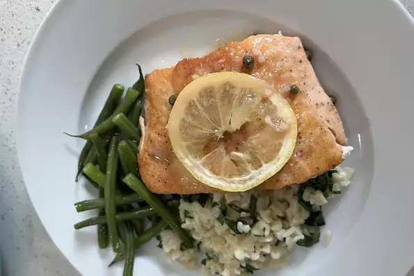

Salmon Piccata

Ingredients
- 3 ounce skinless salmon fillet
- salt and ground black pepper (as desired)
- 1/4 cup all-purpose flour
- 2 tablespoons vegetable oil
- 1/4 cup dry white wine
- 1 tablespoon finely minced garlic
- 1/2 cup chicken broth
- 2 tablespoons lemon juice
- 1 tablespoon drained capers
- 2 tablespoons butter
- 1/2 sliced lemon
Steps
- Season salmon fillets with salt and pepper.
- Pour flour in a bowl and dredge the salmon in the flour. Remove excess flour.
- Heat oil on medium heat. Cook salmon fillets in oil until brown on both sides, roughly 3 minutes of cooking on each side.
- Temporarily store fillet and keep warm.
- Pour wine into skillet, scrape away brown bits from the bottom of the skillet.
- Cook garlic in skillet till fragrant and brown and only half liquid is left (about 1 minute).
- Add chicken broth, lemon juice and capers to skillet. Bring to boil while stirring.
- Add butter to skillet, stir till melted.
- Return salmon fillets to skillet, spoon sauce over them.
- Cook, turning fillets once, until salmon is cooked through and flakes easily with a fork (about 4 minutes).
- Serve salmon with sauce poured over it and garnish with lemon slices.